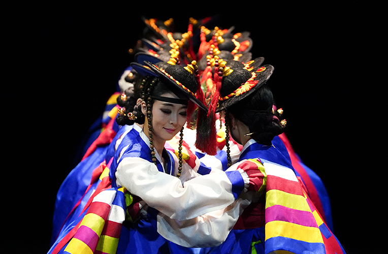
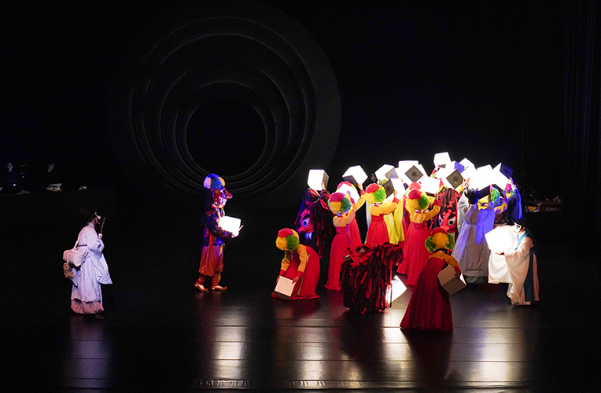
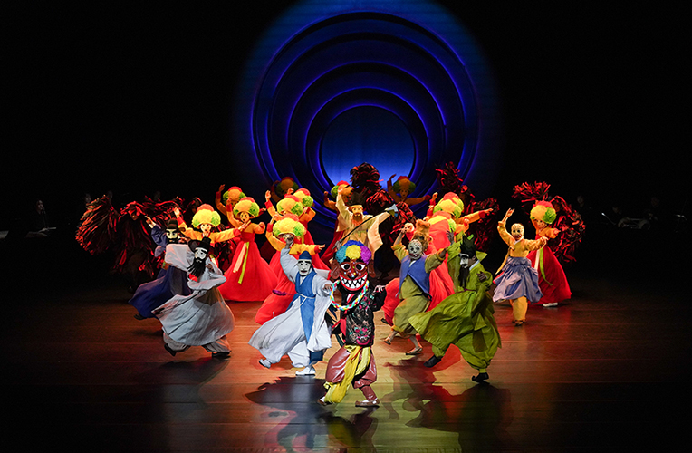
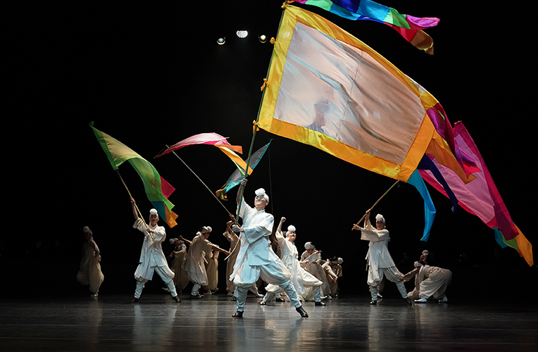
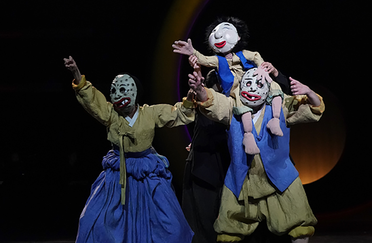
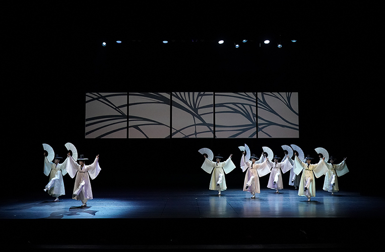
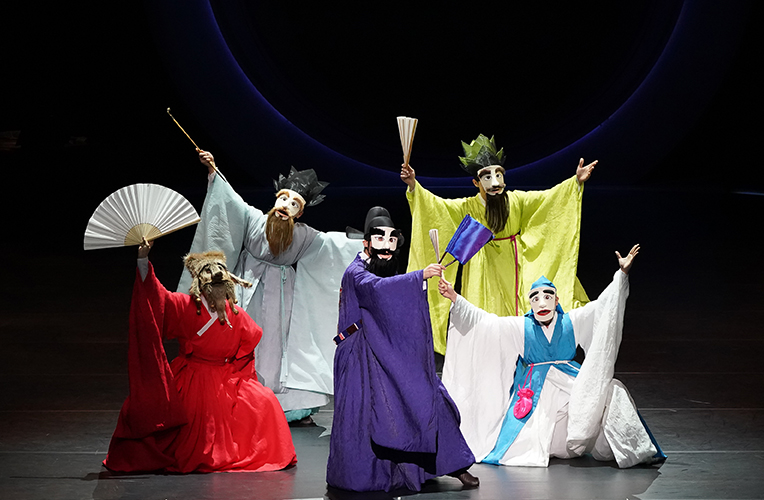

영남춤축제 <춤, 보고싶다>
- 일시
- 7.14.(금) ~ 8.12.(토) 주중 19:30 주말 17:00
- 장소
- 연악당, 예지당, 야외마당, 강습실
- 관람료
- 연악당 S석 20,000원 A석 10,000원 예지당 전석 10,000원
- 출연진/연출진
- 국립부산국악원 국악연주단,공모 및 초청 예술인
- 관람연령
- 취학아동이상
춤으로 소통하며 교류하는 공감과 화합의 축제!
한국 춤의 과거와 현재, 그리고 미래를 담아내는 그릇! 영남춤축제. 유네스코 인류무형문화유산 등재 기념으로 '탈춤'의 가능성을 발견하는 특별 기획공연 및 부산무용협회 60주년 기념 공연 등 전통춤과 창작춤, 원로예술인과 젊은 예술인이 함께 공감하고 소통하는 세대별, 장르별 다양한 프로그램으로 관객들을 맞이한다.
세부프로그램
7월
14일
~15일
~15일
개막공연 국립부산국악원 대표공연
-무용극 <야류별곡_달의 시간으로 사는 마을>
16일
춤 워크숍
19일
한국전통춤판
21일
한국전통춤판
22일
영남춤과 음악
26일
한국전통춤판
29일
영남춤 프린즈
-영남지역 탈춤보존회, 창작탈춤 공연 및 부대행사
30일
춤 워크숍
8월
2일
한국전통춤판
4일
영남춤 학술대회
5일
한국춤 안무가전
6일
춤 워크숍
8일
부산춤 포럼
10일
한국전통춤판
12일
폐막공연 탈춤 페스티벌
-강릉관노가면극, 봉산탈춤, 양주별산대의 대표 레퍼토리
* 공연내용과 일정은 사정에 따라 변경 될 수 있습니다.






